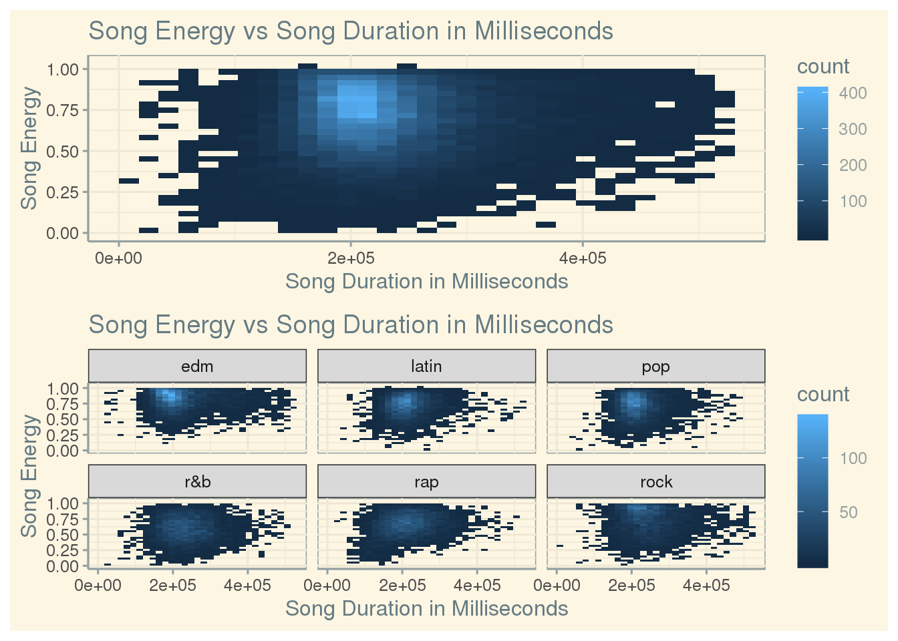

Music is a very enjoyable art that can take on many forms. But, there are those who just like to listen to music, then there are those who like to dissect it, like me in this case. For this project I am examining the Spotify Songs dataset contained in the spotify_songs.csv file on the Tidy Tuesday website. The data consists of 23 variables with 32,833 observations, the definitions for each variable were taken directly from the Tidy Tuesday Spotify website. The data is thankfully all in one set so that there is no joining necessary, but the data set is still rather lengthy. The data comes directly from Spotify but was collected by an outside group and published on Tidy Tuesday. The data was collected from the beginning on Spotify all the way up to January 2020. I wish to examine how song length plays a role in the energetic feeling of a piece, what the ten most popular songs are on Spotify up to January 2020, and if the popularity of a song is related to it’s speechiness.
For this analysis we will be focusing on the variables revolving around speechiness, energy, popularity, and time. Song popularity ranges from 0-100 where higher is better. The variable energy measures from 0.0 to 1.0 and represents a measure of intensity and activity. Typically, energetic tracks feel fast, loud, and noisy, which would be closer to 1. The variable speechiness detects the presence of spoken words in a track. The more exclusively speech-like the recording, the closer to 1.0 it will be. Before we dive right into creating graphs and making lists, it would be valuable to gather a few summary statistics. The reason summary statistics might be helpful before I try to answer the questions is to have a a good idea of where the trends that I am looking for might sit. In this case, the summary statistics I want are the average time of a song, the average energy, and the average speechiness.
## [1] 225799.8## [1] 0.6986193## [1] 0.1070681So, from these calculated means we can already tell where most of the points might lay. This will be very helpful when we will be using scatter plots that will have massive amounts of songs plotted. The average time was 225,799.8 ms which is 3.76 minutes. Of course 3.76 minutes means roughly 3 minutes and 45 seconds, knowing this will be crucial later on.
My first question is, how does the energy of a song compare to it’s duration? To answer this I took the variables for song time and energy and plotted them against each other as a scatterplot to look for any patterns. I wanted to test this because it is easy to assume that a high energy song is going to be short, while a low energy song will be long. Looking at the graph it is interesting to see that the highest density area has the shape of an upside down tomb stone, or a parabola. It would appear that most songs are in the 1e+05 ms to 3e+05 ms range and are of an energy .4 or higher. So there is a tendency for artists to got for higher energy songs that are around 3.5 minutes long in order to keep the attention of the listener. One problem with this analysis is that it doesn’t take into account how well the song is perceived by the audience. There could be a point in that clump that was just a song with someone yelling as loud as they could for 3.5 minutes, I’m looking at you Screamo. While some people may like that the general audience will likely veer away from that kind of music, so the analysis is not all that helpful in real world application.

My second question is, What are the 10 most popular songs? What genres show up more than once? To answer this I had to pick the genre, song name, artist, and popularity from the data. Then I arranged in descending order by popularity and faced a new problem. The way the songs are stored is that a song can be in multiple genres and therefore get multiple entries. For example, Roxanne was in four different genres and therefore took up four slots of the top ten ranking. So, I had to learn a new command called ‘distinct’ to wipe out any repeats of a song based on it’s name but keep the three other variables involved. From there I narrowed down the list of twenty four thousand songs to the top ten. The main problem with this result is that the popularity variable is not specific enough. The popularity is only whole numbers, so many songs will end up tying and the actual ranking will be skewed. If I were to change the process in which the data was collected for this data set I would make the popularity variable more accurate to avoid this confusion. So, the top ten most popular songs in descending order are Dance Monkey, ROXANNE, Tusa, Memories, Blinding Lights, Circles, The Box, everything i wanted, Don’t Start Now, and Falling. Pop showed up 8 times out of the 10 results, so there is a clear preference towards pop on Spotify.
## # A tibble: 10 x 4
## track_name track_artist playlist_genre track_popularity
## <chr> <chr> <chr> <dbl>
## 1 Dance Monkey Tones and I pop 100
## 2 ROXANNE Arizona Zervas latin 99
## 3 Tusa KAROL G pop 98
## 4 Memories Maroon 5 pop 98
## 5 Blinding Lights The Weeknd pop 98
## 6 Circles Post Malone pop 98
## 7 The Box Roddy Ricch rap 98
## 8 everything i wanted Billie Eilish pop 97
## 9 Don't Start Now Dua Lipa pop 97
## 10 Falling Trevor Daniel pop 97My third question is, how does a song’s speechiness compare to it’s popularity? Is there a sweet spot of speechiness to make a song more popular? To answer this I graphed the variables attached to speechiness and song popularity against each other as a scatter plot. I made sure to not include points that had a speechiness above .66 because those are not necessarily classified as music. From there I looked at the general shape the points made and if any trends were obvious. My thinking behind this was to see if music listeners payed any mind to the amount of words in a song. If there are too many words it might as well be a college lecture while if there are too few there is hardly any message to it. Of course the popularity of a song doesn’t solely depend on speechiness, but there is some influence from what we can tell from the graph. What I found is that there seems to be a trend where the points slope downward from top popularity to around .4 speechiness and slope upward from 12 popularity to .4 speechiness to form a triangular point. Also, there are a lot of points with no popularity at all where it didn’t matter how speechy they were, so they were disliked for other reasons. So, in general as a song gets more speechy it’s popularity decreases. The trend upward from 12 popularity to around 50 popularity is likely attributed to other factors. There is no real sweet spot, but being less speechy does help. The main problem with this data is that the process by which speech was detected in the song was not clarified. If I were to redo this data set I would definitely include that process so people were better educated about the speechiness variable’s accuracy and meaning.
In the end, we have delved a bit deeper into the statistics of music. We have found that most songs are around 3.5 minutes long with high energy to keep listeners interested. Also, we discovered the top ten most popular songs on Spotify up to January 2020 and that it was dominated by pop. Finally, we uncovered that in general as a song’s speechiness increases it’s popularity decreases. Having read this one can know take a stab at why a song may not perform very well on the charts, and how it could have done better.